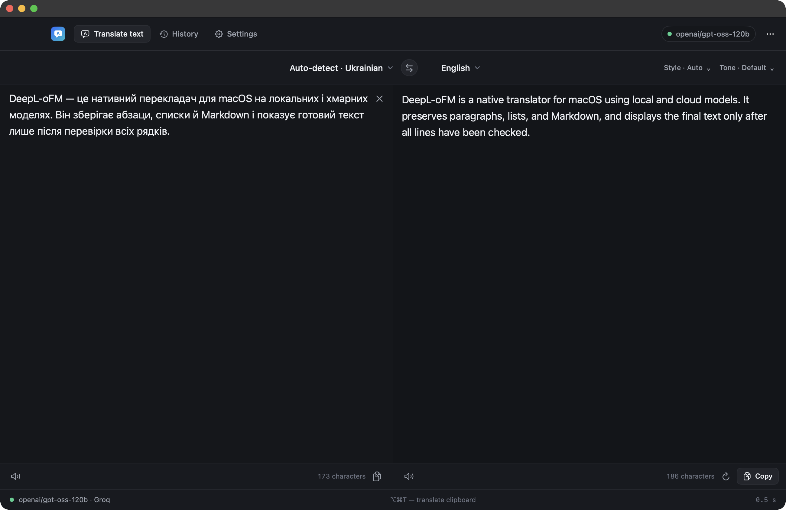
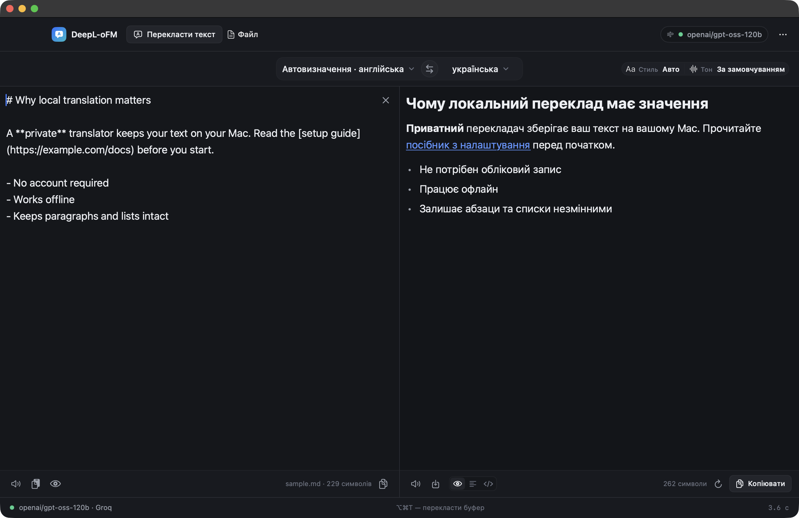
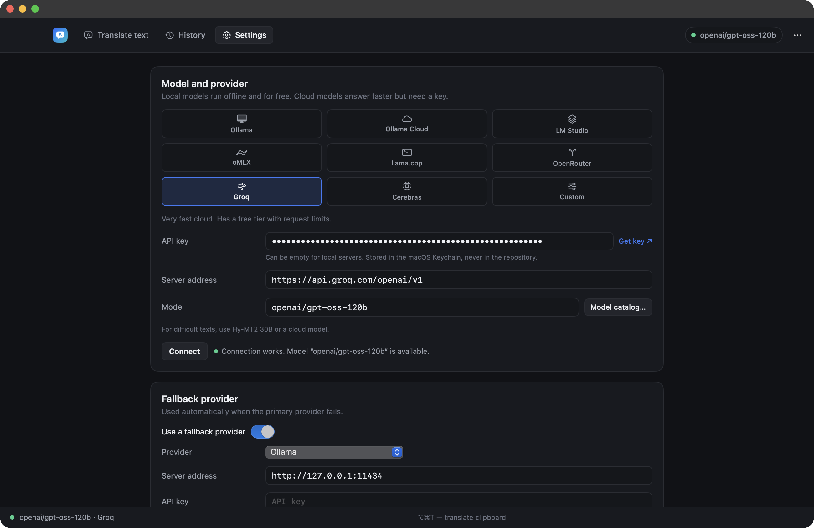

Offline, when you choose Ollama
Hy-MT2 7B is about 4.6 GB. After it is on the Mac, a translation does not have to leave.
Текст лишається на твоєму Mac.
Prepared lines, so the flap is instant. The app translates what you paste.
DeepL-oFM is a native Mac app. The original stays on the left, the translation on the right. Hy-MT2 can run on the machine through Ollama, with the network off. A cloud model is there when you want one, with your own key.
Free. Signed. macOS 14 or later, Apple silicon. No account.

Two panes, a percentage while it works, and Copy when it is done. Settings pick the provider and keep a fallback if the first one fails.
Hy-MT2 7B is about 4.6 GB. After it is on the Mac, a translation does not have to leave.
DOCX updates the text inside the original package. PDF draws the translation on the same pages. A scan still needs text recognition first.
⌥⌘T translates the clipboard. ⌥⌘C copies the selection in the app you are using, then opens DeepL-oFM. The selection shortcut needs Accessibility.






Markdown, plain text, the source, a PDF, and settings. This is a recording of the real window.

The same flap, with sound off. Pause it whenever you like.
Silent on purpose. The greetings in the film are the same prepared lines as the board above.
The usual local model
ollama pull maternion/hy-mt2:7b ollama cp maternion/hy-mt2:7b hy-mt2:7b
An iPhone project is in the repository. The download button is the Mac app.
Skip it if you need a company glossary, a CAT tool, or a translator your whole team already pays for. Stay if you want a Mac window, a local model, and no account.
No account and no analytics. A cloud provider receives the text only when you select that provider. Keys sit in the macOS Keychain.
Not by itself. Run text recognition first, then translate. Digital PDFs and Word files keep their layout.
No. DeepL-oFM is an independent app. The name describes a side-by-side window (“on Free Models”). It is not affiliated with DeepL SE.